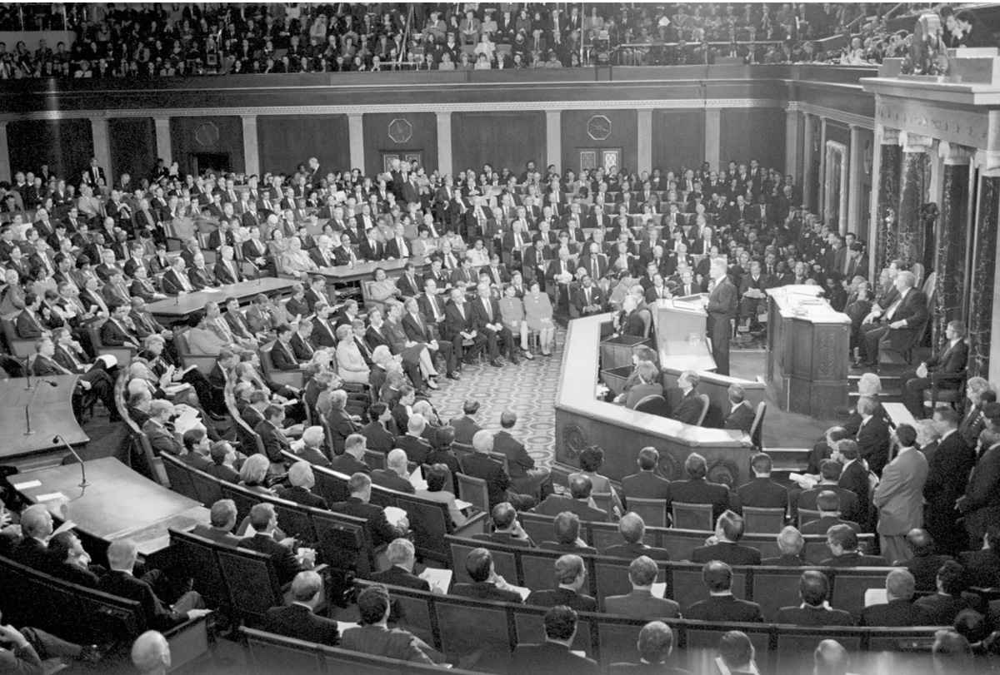
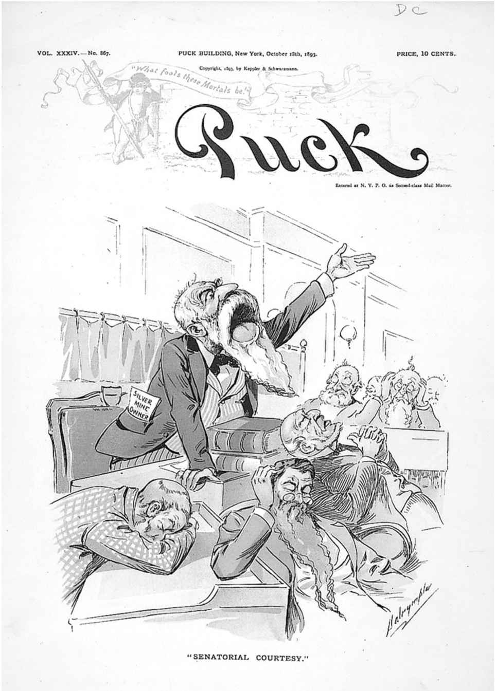

保罗·西蒙（伊利诺伊州民主党人）在众议院供职十年后赢得选举进入参议院，参议院不同的运作方式对他完全适合。他认为众议院更多地受委员会驱动，不鼓励议员在其效力的委员会管辖范围之外提出法案。他曾为支持所属委员会之外的立法做出努力，其他委员会主席则经常轻蔑地回以“我们正在加以研究”。相反，参议员事实上可以不受限制地对辩论中的任何法案提出修正案。由于兴趣非常广泛，西蒙如今可以“涉足众多领域”。
就组织化的众议院和个人主义的参议院而言，两者议场的差异对于理解立法程序至关重要，但两处议事大厅旁听席的访客们在离开时对其所见所闻时常颇感困惑。他们可能看到议长在几乎空无一人的议事大厅发表演说，却如同被专心致志的同僚围绕左右，又或者在看起来永无止境的法定人数点名过程中，似乎不会开展任何事务。议场负责人和法案反对者或许会使用令人捉摸不透的议会辞令。那些曾希望聆听现代版丹尼尔·韦伯斯特的人们时常失望而归，但对立双方之间偶尔会爆发一场真正意义上的辩论，他们深谙议题，激情澎湃地唇枪舌剑。当铃声响起，议场中的一举一动纷然杂陈，议员们从各处门厅转进转出，进行投票表决，并三五成群地交换见闻或设法达成协议。
周密复杂的立法策略在议场的一言一行间得到调整以促成法案的颁布。相互对立的双方会利用一系列立法策略对法案加以推进或施加阻碍。由于党纪长期以来都难以在国会中得到贯彻，围绕重要法案会构建跨党同盟，每个政党都试图剔除另外一党中持有不同政见之人，这使许多立法之战的结果难以预测。
参、众两院议场上的活动是程序、政策、政治、个性和立场的混合体。每天的会议都始于一段时间的“早间事务”，议员们此时可以根据个人意愿做简短发言（众议院为一分钟，参议院可长达一小时）而不会遭到反驳。早间事务结束后，两处议会大厅便开始立法，尽管众议院严格的时间限制以及参议院的规则与传统都大体上保证了礼仪礼貌，但辩论却可能变得激烈异常。议员们可能在几乎空空如也的议会大厅发表讲话，支持或反对某项议题的双方也可能展开谈话。辩论记录员将各种言论记录下来，这些言论会公布在次日的《国会记录》中，在他们看来，“真正的政治家”会提前向他们奉上事先备好的文本。
在辩论中，众议院保留着五分钟规则，对议员发言时长加以限制，尽管在休会后，一些议员会根据“特殊程序”返场发表长篇讲话，在另一方不出席的情况下就某项议题进行“辩论”。特殊程序并不是立法会议，但还是会被列入《国会记录》，并通过C-SPAN进行播放，这可以帮助议员们锤炼论点并获得宣传。在1979年配备摄像机之前，众议院的议员们很大程度上是在委员会室建立起声誉的，但电视使他们得以向全国观众发言。一位频繁利用特殊程序的众议员注意到，只要出现在镜头中，“办公室的电话便会亮起灯来”。电视节目尤其有助于持不同政见者和少数党，他们或许在国会中缺乏将计划制定为法律的赞成票，却可以转而面向全国观众提出充分理由。
巴拉克·奥巴马（伊利诺伊州民主党人）在为期不长的参议员任职期间只在参议院议场中逗留过很短时间，主要为投票才匆匆进场，旋即前往处理其他紧急事务。在他若干次担任主席时，议场上通常只有一位参议员在几乎空无一人的大厅中讲话。他注意到，“在全世界最伟大的审议机构里，没有人在留心倾听”。丹尼尔·韦伯斯特和亨利·克莱令现代辩论望尘莫及，但政治演说早已成为陈迹，议场策略如今更有赖于投票表决而不是能言善辩。对于身在少数党而乐于在辩论中进行一番冷嘲热讽式攻击的搅局之人，一旦成为多数党的一员，就会对其他议员进行安抚、取悦或与之交易，以换取对其法案的支持。一些最为多产的立法者往往不事声张。他们认为，如果掌握选票，便无须发言；如果需要发言，便没有选票在握。有时，发言可能影响到法案获得通过的机会。参议员哈里·里德回忆道，当他进行首次发言提出纳税人权利法案（该法案在他作为众议员期间从未能在小组委员会中获得通过）时，主事官员和下一位等待发言的参议员刚好都是有税收管辖权的参议院金融委员会成员。他们听了他的发言并同意对他的法案伸出援手。里德评论道，法案得以通过“固然与我的沟通能力有关，但更加重要的是哪些人在留心倾听”。
相比于其他两大分支之中的任何一个，国会都更多地在公众的视野中谋事，更倾向于通过听证笔录、报告及其他参、众两院文件将多数事务予以公布。议员们谈论的几乎所有事情，连同一些他们没有谈论的事情，都会出现在翌日的《国会记录》中。宪法并没有要求国会在大庭广众之下运作或公布全部会议记录，只要求“不时”出版一期刊物。参、众两院保留了议程期刊，作为每日活动概要。它们不同于《国会记录》，后者脱胎于早期报刊记者为写入文章予以发表而撰写的笔记，随后编为《辩论年鉴》（Annals of Debate ）、《辩论记录》（Register of Debate ）以及《国会巡览》（Congressional Globe ）。国会直至1840年代才为辩论雇用官方记者，政府印务局直到1872年才开始公布《国会记录》。这部日志囊括了一揽子信息，不仅包括法案文本和相关发言，还包括社论、颂词、毕业演讲、选民信件以及议员加入其中的呈现他们所读所思的大量其他内容。
议长或临时议长会从某个特定时间出现在任一议会大厅的几位等待发言的议员中选择议员轮流主持事务。有人将会议主持视为一项繁重的义务，但它是议员借以熟悉议程和规则的最佳途径。他们也可以应允为同僚担任主持而获得一些报偿。初出茅庐的主事官员需要做的只是谨遵建议（并大声重复规则专家的低语），一旦会议陷入争论，经验更加丰富的议员将接手主持。
参、众两院的规则专家们必须掌握正规规则以及数千先例。博学、公正、谨慎的规则专家在辩论中向双方提供信息，但避免因仅仅回答他们提出的一些问题而将一方的秘密泄露给另一方。众议院的程序比参议院更加系统严密，但两院都可以放宽乃至搁置规则。众议院可以通过转变为“全体委员会”实现这一点，其更为宽松的规则会加速工作进展（参议院只有在充当弹劾法庭时才作为全体委员会）。而参议院则要通过全体同意才能放宽或搁置规则。曾在两院效力的尤金·J.麦卡锡（明尼苏达州民主党人）对两院的规则和程序都持怀疑态度，他告诫新议员不要为设法记住它们花费太多时间。麦卡锡评论道：“参议院规则非常简单易学，但在实践中很少得到遵行。众议院规则太过繁琐。要利用规则专家。”
多数党领袖从立法日程（经委员会上报并准备予以讨论和投票的法案清单）中宣读某项重要法案之际，参、众两院的运作表现出最大的差异。在众议院，法案最先交予由多数党牢牢控制的规则委员会，委员会将起草一份称为特别规则或特别程序的决议，这份决议会确定将要提交到议场的修正案数量和类别以及为辩论分配的时间。一旦众议院以多数票通过特别规则，多数党领袖方知其只需保持团结一致就可得到使法案获得通过的票数。少数党除了设法扰乱多数党之外几乎别无选择。某位参议院多数党领袖曾不无渴望地表示：“我可以毫无保留地告诉我的同僚们，有些时候我希望自己是众议院议长。众议院议长不必担心少数党，他们无人能敌。”

图7 两个议事大厅中更加宽敞的众议院议事大厅是举行参、众两院联席会议的地方
考虑到规模和与生俱来的尾大不掉，众议院不允许采用阻碍议事进程或其他拖延策略。其规则使中断讨论并强行投票更为简单易行。众议院多数党采取过各种策略，从允许提出大量修正案（以协调党内分歧）到限制可以进行辩论的数量（以推动政党团结），不一而足。无论什么时候某个政党稳居大多数，众议院都经常会讨论诸如国防授权等重要法案的诸多修正案。众议院一位工作人员注意到，“允许少数党提出修正案而由规模庞大的多数党予以定夺，由此做到宽宏大量是容易的”。但优势较小会导致结果难以确定，以致多数党会对提出修正案的努力加以限制。
如果法案陷入困境并需要施以援手，或将启用“挽救”修正案。1968年，众议员查尔斯·马赛厄斯（马里兰州共和党人）支持一项自由居住法案，法案旨在消除租售房屋过程中存在的种族歧视。为避免反对者彻底损毁法案，他提出了一项弱化法案某一部分的“挽救修正案”。相反，制定“扼杀”修正案是为了使法案难以接受而使支持方望而却步。但扼杀修正案也可能事与愿违，正如众议员霍华德·史密斯作为隔离主义者为了摧毁1964年《民权法》而在其中增加了妇女平等权利条款。自由主义者担心这项修正案将动摇对于整部法案的支持，不过还是予以接受，具有里程碑意义的妇女权利条款从此成为法律。庆祝法案通过之际，懊恼的史密斯回应道：“好吧，当然，你知道，我是把它当作笑话提出来的。”
反对者可能引入一项与法案主题无关的修正案，只是为了挑起冲突。如果主席裁定修正案违反规程，反对方可以提出动议推翻主席裁决，同时进一步安排投票以搁置诉请。即便少数党知道己方定将落败，哪怕是在程序性动议而不是实质性动议投票之际，也可以迫使来自摇摆选区的脆弱的议员就某些可能危及其连选连任的事务公开表明观点。比如，可能在下次选举中构成负面宣传的关于税收的修正案。
规则委员会可能在法案中加入一项“自动生效”修正案，以委员会的意见取代原始法案中的条款。规则委员会随后将规定，只要众议院投票赞成特别规则并宣读法案予以讨论，这一修正案将得到采纳。该程序最初用来对法案做出技术性调整，但随着时间的流逝，多数党领袖也借其绕过委员会，对立法进行实质性修改。
总体而言，多数党不会做任何帮助少数党的事情；然而，1995年众议院共和党在重获权力之际废除了一项条款，该条款曾使共和党在身为少数党的40年间困扰不已。他们禁止规则委员会宣布任何使少数党没有机会提出“带有说明的再付委动议” [10] 的特殊规则。这项程序性动议准许反对方将法案送回委员会以将其推迟。既然重新付委的动议可以得到修正，少数党便获得在议场上提出修正案的机会。将法案送回委员会不一定使其遭到扼杀（委员会可以再次将其交由议场讨论决定），但由于法案已经在议场上虚耗掉宝贵的时间，多数党领袖很可能不急于再行宣读。
就再付委动议而言，多数党使其对手获得一项武器，但它还是有办法使少数党按兵束甲。作为多数党，几位共和党领袖都曾指示其大会成员投票反对民主党提出的有关任何议题的再付委动议。这样的党派一致性在民主党大会中并不常见，于是民主党恢复多数党地位后，再次改写规则，对采用再付委动议加以限制。多数党也可以在“搁置规则”的名义下提出一项法案以反击少数党的动议，这一程序是为了加快非争议性问题的进展，如为邮局命名，但这需要三分之二赞成票才得通过。因此，从搁置规则法案议程中宣读重要法案实为孤注一掷，很可能导致落败。即便如此，由于搁置规则法案不可加以修正，这种策略也就避免了少数党议员提出令多数党难堪的修正案。多数党因此保护着本党，尽管或许并没有推进立法议程。
投票表决可能使议员无法既对所属政党忠诚，又在家乡保持声望。政党领袖们明白，要求议员自断政治前途会弄巧成拙，在关系到各州利益的事项上，议员们会留有余地。然而，每一张选票都可能是至关重要的。乔·莫克利（马萨诸塞州民主党人）曾受到同僚托马斯·P.“蒂普”·奥尼尔议长（马萨诸塞州民主党人）的敦促，让他在众议院规则委员会的一次关键投票中提供支持，他迟疑不决地表示：“老天，蒂普，这很难办。”奥尼尔则回答道：“嘿，老乔，简单的事情我才用不上你。”
众议院多数党通常占有优势，但也有例外。某些时候，议长和多数党领袖不得不让他们反对的法案在议场上进行投票表决。在乔治·W.布什总统否决一项包括美军撤离时间表的伊拉克战争开支法案后，支持时间表的议长南希·佩洛西准许对经过修订取消时间表的法案进行投票，因为她知道，多数党没有推翻总统否决所需的三分之二赞成票。民主党领袖为了使法案更符合其政党大会的心意而加入其他一些条款，包括提高最低收入及向卡特里娜飓风受难者提供灾难救济。这一版本获得了通过，并得到总统的签署。
众议院议场议程的杂乱无章无人不晓，在其历史上曾上演过不少恶战。曾对这些议程有所研究的政治学家们注意到，尽管友好和合作永远受到欢迎，但真正的立法成就却是通过政治上的矢志不渝和坚持不懈实现的。众议员们认为，国家治理必然存在分歧，他们的不同意见反映出国家观念的多元性，即使是愤怒的辩论也可以带来立法和改革。谢罗德·布朗（俄亥俄州民主党人）就其众议院任职评论道：“许多观察员认为，我们的豪情万丈和党派忠诚实在幼稚，我们不停地在政党利益上言不由衷地故弄玄虚。但这些外表的激情和愤怒，乃至冷嘲热讽，是在用语言表达深信不疑的同一种理念。”议员们毕竟是通过竞选进入国会的，他们在此过程中成为反对者和社论作者攻击的靶子。当置身众议院议场时，他们通常已经可以全副武装地应对立法之战。
被选入参议院的众议员们需要忘记他们学到的关于众议院规则的大部分内容，因为两院的运作截然不同。参议院鲜有冲动之举，其议事日程和运作程序由领导层制定。参议院在议事步伐上更加庄重有礼且深思熟虑，每位议员都更加随和，大部分事务的处理都需要一致同意。这意味着，仅只一位议员就可以在参议院中撑起工作，使其成为个性导向的机构。众议院领袖不断号召参议院领袖拿出勇气直面对手，但参议院领袖回应道，他们在立法及程序方面的力量和权力本就不同于众议院。
参议院法定人数需达到议员的51%才能开展工作，但若非投票时间，议场中的参议员通常为数甚少。除非某位参议员要求注意法定人数未能达到，以此作为拖延策略，通常都假定法定人数达到了。因此，需要多数来构成法定人数，从而使议程得以继续。招呼参议员点名时，会响起铃声。有时，参议员故意避免按照程序进入议事大厅，为的是令多数党无法行事。多数党领袖随后可以指示警卫官“逮捕”缺席议员并将他们护送乃至扛到议事大厅。然而，大多数时候，法定人数点名仅仅是保证议事大厅继续开会的策略，同一时间也许休息室中正在起草一项妥协案，又或者下一位预先安排的发言人不能及时到场，这一程序比正式休会相对简便。
参议员们要坐在议事大厅中指定的位子上。每天清晨，每一位参议员的桌子上整齐地摆好前一日的《国会记录》、最新执行议程（列出将要处理的提名和条约）和立法议程（即“事务议程”，列有待处理的法案和决议）以及当日待辩论法案或协商会议报告，这些文件排成一列，各有十几页。这种整齐划一或许会造成错觉，其实会议程序很难井然有序。参议院每年要通过成百上千项法案，但只会讨论其中的几十项。绝大多数法案和决议都经一致同意的协议或呼声表决予以通过，并没有漫长的讨论和点名。协议是在委员会和休息室中达成的，因此缩小了需要在议场分出高下的争论范围。但大量投票表决还是需要举行的，这要求政党领袖每时每刻都严阵以待。曾身为党鞭和议场领袖的米奇·麦康奈尔（肯塔基州共和党人）参议员强调，花时间待在议场中十分重要，当“棘手的表决摆在面前，而票数非常接近”时，务必待在那里。在鱼贯进入议事大厅的参议员当中，部分人或许根据工作人员的强烈要求进行投票，但一定会开放地面对政党领袖做出判断。
在众议院议场上，重要法案的命运取决于规则委员会的决定，与此不同的是，参议院规则和行政委员会负责分配办公室和停车位，这些有效的便利设施与推动立法关系不大。众议院领袖们享有的特别规则所带来的好处是参议院领袖们所不具备的，他们转而依靠一致同意形成的协议。一致同意可能会涉及一些日常事务，如要求将一项发言印在《国会记录》中，如同其已完全经过宣讲，又或者会确定法案辩论时长及如何加以修订。一项完整的法案也可以经一致同意予以通过，而无须辩论或唱名投票。由政党的议场领袖苦心协商形成的协议更加复杂，而一旦得到采纳，也只有通过一致同意才可加以变更。
如今，参议院的大部分事务都通过一致同意予以处理。这样的协同可以搁置常规以节省时间。比如，参议院的一项规则要求法案在通过之前须宣读三遍，该规则通常由一致同意予以搁置，除非某位议员想要推迟决定并表示反对，而迫使书记员花掉数个小时大声宣读长达数百页的文本。一致同意有助于领导层推动立法，同时授权给每一位参议员，他们中的每一个人都可以起身说出“我反对”。领导层随后将设法确定招致反对的原因（或许与正在考虑的事务有关，但也可能无关）并决定他们是否可以给予满足。
与一致同意相反相成的是“推迟”。参议员们若正在推迟一项法案或提名，会私下知会其政党领袖。多数党领袖随后将不会宣读该事务以进行讨论，直至推迟得到取消。参议院规则并没有授权采取推迟的做法，但这一做法在实践中还是得以遵行，因为政党领袖不希望毫无防备，而是想要知道是否有人打算对某项一致同意表示反对。如果议员的反对意见得到满足，他们或许会取消推迟，又或者多数党领袖会等到会议结束并让大家知道所有推迟都已取消，以检验各种反对意见是否已经偃旗息鼓。
仅一位参议员就可以对参议院、众议院和总统的意志构成阻碍。1988年夏季休会前的最后一晚，参议院就一项试图废除银行与证券分业法 [11] 的法案展开辩论。两院都已经以压倒优势通过了这项法案，但通过形式各不相同。协商会议报告化解了双方的分歧，众议院也予以批准。当参议院最终着手处理该法案时，参议院银行业委员会主席要求经过一致同意摒弃冗长的法案宣读。唯一一位持不同意见的议员阿方斯·达马托（纽约州共和党人）再三反对。当再次要求形成一致同意后，他表示“这位参议员的听力有问题”。“我反对。如果你想要我大声表示反对，我就大声说出来。”多数参议员已动身回家，只有委员会成员留了下来，因此不可能通过点名采纳协商报告，致使一致同意因达马托而无法实现。参议院于是在未能通过这项法案的情况下休会。

图8 1893年10月18日《帕克》（Puck ） [12] 杂志刊登的漫画夸张地临摹参议院争论不休的传统，暗示过分能言善辩或许并不能令人信服
由于参议院表决票数通常颇为接近，连同需要在争议性事务上加紧争取最后一批悬而未决的投票，骑墙派在应对法案负责人方面发挥着重要影响力。地方利益集团、游说人士、政府联络人以及寻求帮助和投票的其他人员都在拉拢参议员。不止一位多数党领袖将设法领导一个由如此强大的个体组成的机构比作管理一群猫。而参议院规则几乎没有向多数党领袖分配具体权力。林登·约翰逊（得克萨斯州民主党人）曾评论道，他唯一能够依靠的就是说服的力量。其他领袖则将参议院形容为百位来自各州、经历各异且观点不一的个人构成的“复杂关系网”。
自1975年参议院终止辩论所需赞成票从三分之二减少到五分之三（100名参议员中的60名）后，多数党领袖便更加频繁地在宣读重要法案之后随即以终止辩论动议对辩论加以限制。多数党领袖提出动议以着手处理一项法案，由于这一动议具有争议，多数党领袖会立即提出终止辩论动议。实现终止辩论表明参议院对法案颇为重视，且法案将以某种形式予以通过。如果终止辩论动议落空，多数党领袖会在剩下的时间中着手处理另一项事务。
由于参议员们每周末定期返回本州，立法工作日缩短为周二至周四。这一完成任何事务都显紧张的时间使得阻挠议事造成的威胁更为有力。阻挠议事不再采取陈旧的冗长发言方式，而是成为少数党无声的工具，并且经常得到采用而非作为最终手段。参议员阿伦·斯佩克特评论道：“阻挠议事的成本如今非常低廉。你所要做的事情只是表明：我要阻挠议事。随后将进行终止辩论投票，而60张赞成票无法达成，该项事务也就付之东流。”虽不胜其烦，60张赞成票的要求却在推动妥协退让和两党合作。为了实现任何能够带来结果的事情，参议员们必须跨越党派界限并吸纳超越党派、地区和意识形态的广泛支持。
1970年代，参议员杰西·赫尔姆斯（北卡罗来纳州共和党人）提出了不断提出争议性修正案并要求唱名投票的策略，尽管他所支持的一方很有可能落败。保守的赫尔姆斯打算将持自由倾向的立法者对某些社会问题的看法记录在案，如艾滋病防治资金、堕胎、法院强令校车服务以及由联邦资助有时显得乏味的艺术工作等。赫尔姆斯在为其行动作辩护时表示：“我曾希望参议员们公开表明立场。我当时想让他们的选民决定接下来将要发生的事情。当参议员们不得不凭借记录而不是鼓唇弄舌进行竞选时，事情会真正开始改变。”
为了应对这样的策略，多数党领袖们诉诸“扩充修正案之树”。参议员一旦提出一项修正案通常会失去发言权，但按照“优先承认权”，多数党领袖总是先于任何其他议员被叫到。因此，多数党领袖可以提出一项修正案，随后即刻争取承认，进而对这项修正案提出另一项修正案（即所谓“二级修正案”），由此持续提出修正案。参议院就这些修正案进行投票表决之前，其他修正案都不会进入程序。呈现此类修正案如何扩展的图表与树木相仿，它们于是被称为“修正案之树”。此举旨在避免法案反对者就他们选出的某项修正案赢得第一轮投票，这或许会为多数党制造某些政治问题，又或者会使法案产生重大变化。
少数党议员抗议道，扩充修正案之树妨碍了富有意义的辩论。他们不能仅仅是来到议场并提出修正案。某位参议员曾试图使媒体关注他所提出的阻止参议员向自己的修正案提出二级修正案的解决之道。媒体席的记者们不得不向他表示相关报道很难刊出，原因在于“无法向任何圈外人加以解释”。
老话说：“法律就像香肠。最好不要看到它们是怎样制成的。”说服、压力和讨价还价混杂着糅合到每一部法案当中，进而成为法律。处理立法事务直至其颁布，需要向尽可能多的参议员有所给予。对于没有直接利害关系的立法，议员们或许会交换投票，通过支持其他人热衷的计划换取其承诺支持本人的计划，这一做法被称为滚木材（logrolling） [13] 。在投票方面，议员们会感受到总统、所属政党、背后的选民以及游说人员施加的压力。一些议员直到前去投票的最后时刻都无法做出决定。他们将这种情况比作“忙碌的研讨会”，试图根据塞在口袋里的便条、简报、工作人员的私语、同僚匆忙的简介以及白宫最后一刻的来电决定如何投票。
唱名投票的数量增长迅猛。1953年，即艾森豪威尔执政首年，众议院举行了71场记名投票，参议院举行了89场。至1999年，众议院记名投票增加到611场，参议院则增加到374场，这表明程序的变化使提出修正案并采用记名投票更加简单易行。
政党领袖们急欲了解可能产生的投票结果，于是安排党鞭充当“计票人”。在众议院，代理党鞭和地区党鞭决定着议员们的倾向，他们站在议事大厅门口怂恿议员们站在政党一边投票表决。担任过众议院多数党党鞭的托尼·科埃略（加利福尼亚州民主党人）曾表示：“如果你当真是一位出色的计票人，就不会让某些导致失败的事情发生。”出色的计票人会保留与议员相关的信息，用以交换、劝诱、倚重或胁迫议员。议员们在欲与政党共荣辱和“投票支持其所属选区”之间左右为难，可能故意对初衷闪烁其词。除非计票人善于识别肢体语言，否则他们可能错误地为尚未决定乃至投票“否决”之人记下赞成票。
计票人提醒道，想当然地假设任何人会给予支持都是危险的。政党、意识形态和个人因素都可能对议员的投票产生影响。参议员罗曼·赫鲁斯卡（内布拉斯加州共和党人）曾想当然地认为保守的同僚巴里·戈德华特（亚利桑那州共和党人）将支持他正在发起的选举权法案，却没有发现戈德华特已经对该项法案的自由主义版本添加了一项修正案。当戈德华特投票反对赫鲁斯卡时，赫鲁斯卡目瞪口呆，冲过去要求解释。戈德华特辩解道：“我已经对法案提出修正案，不打算投票反对我自己的修正案。”
参、众两院投票通常需要15至20分钟。在这期间，议员们可以改变投票，如果票数非常接近，焦急的政党领袖和同僚们便会奋力拉票。领导层或许也会保留一些选票，一旦清楚得知即便没有这些票数法案也必将通过，他们便放开这些选票，使投票在政治上更加便利。在参议院中，立法书记员会大声宣读赞成者和反对者，随后将最终计票结果交予主事官员，由其宣布法案是否通过。在实行电子投票的众议院，当主事官员通过敲击木槌宣布投票结束后，计数屏上显示的票数时常已经发生改变。事实上，木槌敲击桌面的声音并不是投票正式结束的信号。直至主事官员将计票员准备的投票单上的结果予以公布，一场众议院投票才算正式完成。
即使两院均已通过法案，程序也并没有结束。如若两个版本存在差异，其中一院必须接受另一院的不同之处，否则双方将在协商委员会上进一步谈判。这类差异有可能是惊人的。比如2007年7月27日众议院通过的农业法案长达160页。参议院在12月14日通过的一版则有1876页。随后的协商用去数月时间才使两院达成和解。
当一院对某项法案进行表决后，利益没有得到满足的各方势力将求诸另一院，以争取做出一些具体的改变。一旦另一院将这些变化融入其法案当中，这项法案也便获得更加广泛的支持。因此，当参、众两院参与协商的议员们面对面化解分歧时，最终形成的法案将更加接近第二个版本。
两院之间在立法策略上有时需要为保全面子而分散注意力。1950年代早期，参议院再三通过立法以向教育领域提供联邦资助，但并没有获得众议院的通过。随后在1958年，苏联发射第一颗地球卫星“伴侣号”，对国会和公众造成冲击。作为回应，参议院遂将法案更名为《国防教育法》，强调通过科学教育帮助美国人赶上苏联人。法案还是在众议院遭到质疑，于是众议院教育事业小组委员会主席卡尔·埃利奥特（亚拉巴马州民主党人）将众议院辩论圈定为以借款形式颁发奖学金，而参议院已主张将其作为补助金。众议员们抨击补助金乃某种形式的社会主义。参议院教育委员会秘书长斯图尔特·麦克卢尔注意到，“这项恼人的奖学金问题刚刚完全解决，法案便一举通过。我想，所有人都没读过法案的任何其他条目”。
两院都会估量在一项法案上将要走多远，并假设另一院将朝着相反的方向迈进，他们进而可以互相妥协让步。曾设法凭借一项移民法案角逐2006年竞选的众议院共和党人，主张既要确保非法移民无法越过美国边境，同时对已经身在美国的非法移民也不予特赦。来自多数党的汤姆·迪莱作为共和党领袖随后解释道：“得知参议院将要采取一贯做法后，我们的策略是在众议院通过一项严厉的边境安全法案，然后再通过一项更加‘综合’的法案对其加以削弱。接下来的协商委员会将会形成一项附带某种有限客工计划的严厉的边境安全法案，这会是迎合每个人的法案，也包括总统在内。”相比于参议院，众议院多数党更能控制其议场程序，因此众议院参与协商的议员们预期，比起参议院多数党，他们将在更稳固的位置上影响法案的最终条款。而要使法案在参议院获得通过更需要两党合作，由于反对特赦的一些议员不肯让步，法案于是在参议院石沉大海，这对移民改革的支持者造成沉重打击，并反映到秋季选举当中。
众议员由于服务于较少的几个委员会，通常逐渐精通这些委员会处理的立法问题。在协商中，他们可以逐字逐句地展现他们对法案的了解。参议员服务于更多的委员会，很可能会更加依赖其工作人员处理法案的初步工作，而且并不总是被授权参与到塑造法案的协议当中，这有时使他们在协商中处于劣势。众议院要求所有协商人员出席会议，而参议员将根据其利害关系出席。通常，主席和资深少数党议员等几位参议员会面对一群众议员。但参议员们会平衡这种关系，或者通过缺席的同僚委托其做出的投票，或者通过劝告众议院参与协商的议员们，某些条款将不会在参议院获得通过并由此否决议案。协商会议上会呈现诸多条款，又转而销声匿迹。当协商委员会设法商讨法案中更大的分歧时，那些曾引导某项其个人赞同的目标通过艰辛立法程序的议员们，经常会灰心丧气地眼见这些目标遭到放弃。与此同时，一些条款从未出现在任何一院的法案当中，或从未作为任何听证会或辩论的主题，却可能被添加到协商报告当中。
多数党有时或许试图使少数党无缘协商决议。尽管宪法不要求国会将其事务公之于众，但参、众两院都已进行“阳光”改革，这项改革要求公开举行委员会会议。为应对这些改革，协商委员会或许会召集一次公开会议，但最多相当于“拍照招待会”，随后便不再举行其他正式会议。多数党仅仅需要大多数协商人员在协商报告上签字。有些时候，多数党甚至不会邀请少数党议员参加协商，即便这种可以在多数党掌控的众议院中奏效的策略会在参议院中产生事与愿违的结果。在参议院，少数党可以阻止协商报告获得通过。
如果同一政党同时掌控参、众两院，联合起来的领导层可以绕过协商委员会，直接在两院间达成解决方案。其中一院会修正另一院的法案，其做法是替代法案的全部用语并将其送回另一院以获得批准。另一院可以接受修正案以示赞同，也可以通过本院的修正案并将其送回。这种打“乒乓球”的方式将修正案推来推去，直至两院就同一份法案达成一致意见。多数党绕过协商会议可以使少数党无法参与讨论，也削弱了本党持不同政见者支持少数党的能力。当法案只需要略作调整因而无须协商时，也有必要采用修正案程序。
一旦协商会议就妥协做出报告，两院均必须直接通过协商会议的版本，且不再予以修正。否则，法案将再次退回协商会议或彻底流产。
即便得以通过所有这些程序，法案依然可能遭到总统的否决。如果法案送交总统后十日之内国会进入休会期，没有获得总统签署的法案会宣告流产，而国会也再无可能做出反应（这就是众所周知的“搁置否决”）。但若国会依然处于会期当中，两院议会大厅都通过三分之二赞成票就可以推翻一项否决。三分之二赞成票的规定使否决很难推翻，仅仅存在否决的可能性都能说服国会根据总统的偏好改变一项法案。众议院多数党领袖斯滕尼·霍耶（马里兰州民主党人）曾解释道，任何法案的通过都需要“所有相关各方”达成一致，“在他们当中，握有否决权的总统是非常重要的参与者”。为防止遭到否决，国会会将总统期待和反对的条款集中到一起。总统只有全盘否定却没有部分否决法案的权力，因此必然否决整部法案。1996年，为了削减联邦开支，国会授权总统“择项否决”拨款，但最高法院以违反宪法为由予以推翻。里根政府以来，现代总统越来越多地采用“签署声明”，将其等同于择项否决。总统虽签署整部法案，但为了使法案符合本人的目标而对其进行重新解释并试图改变某些部分。联邦法院尚未就此类声明是否符合宪法做出裁决。
首位坚定地行使否决权的总统是安德鲁·杰克逊，这位民主党人于1829—1837年执政期间否决了12项法案，最值得注意的是否决再次向合众国银行颁发特许状。对手辉格党没能推翻他的任何一项否决。杰克逊自认为代表全体人民并且因此比国会中的每位议员都更能判断民意。他的继任者们频繁采用否决策略，从而与国会对立起来。那些面对国会多数党对手的总统通常将否决视为英勇之举，表明他们愿意在原则问题上坚持立场。曾任众议院共和党领袖的杰拉尔德·福特（密歇根州共和党人）在1974年担任总统后，通过否决多项议案对抗国会，以表明自己是一位雷厉风行的执政者。作为多数党的民主党推波助澜，送交福特的法案都是他们希望予以否决的，他们坚信这种记录将使他在下次竞选中落败。
新任总统时常以签署前任总统否决的议案开启其执政期。比如，比尔·克林顿总统首项重要立法成就是1993年《家庭与医疗休假法》，这项法案使人们得以休假来照料生病的家人，它曾两次遭到前任总统乔治·H.W.布什的否决。国会议员有时会投票赞成某些他们并不认同却颇受欢迎的法案，他们确信总统将予以否决。总统所属政党通常投票维持否决，除非法案比总统更受欢迎。于是就有1972年国会两党联合推翻理查德·尼克松总统对《净水法》的否决，总统认为该法成本过高，但它得到了选民的强烈拥护。无论如何，否决权还是使总统获得了优势。国会议员们表示，选民会抱怨他们身为多数党却无法推翻一项否决。当他们设法就三分之二赞成票规则做出解释时，他们发现国会之外的人们并不关心立法机制。他们只想得到结果。